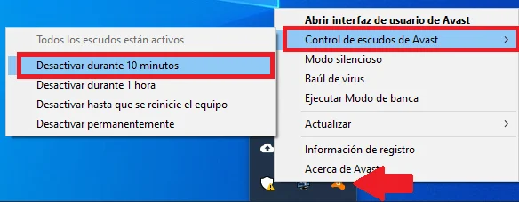
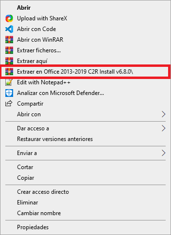
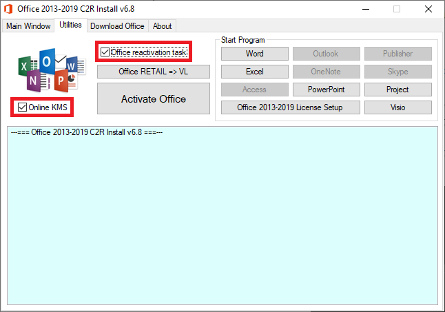
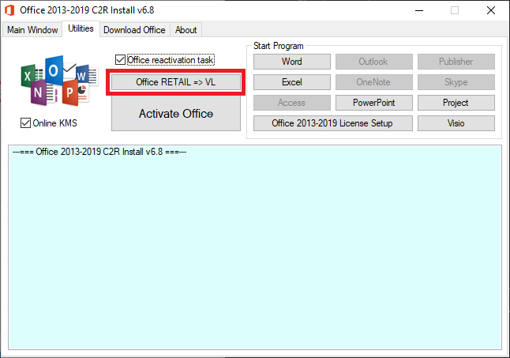
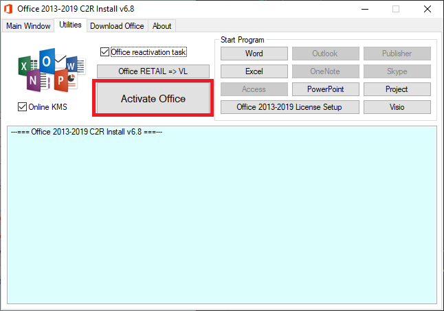
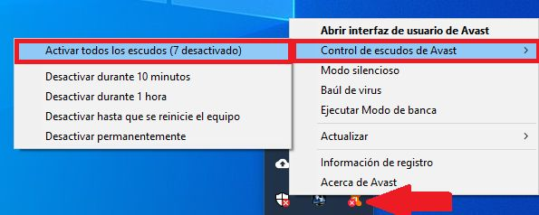

Como activar office
1. descargar el archivo
Aqui
2. Desactivar el antivirus
click derecho en el icono, control de escudos y desactivar

3. extraer el archivo (contraseña 123)
click derecho en el archivo y extraer en ...

4. Ejecutar OInstall
5. Dirigirse a la pestaña utilities y tildar Online KMS y Office
reactivation task

6. Click en Office RETAIL => VL y esperar a que termine de procesar

7. Click en Activate Office y esperar a que termine de procesar

8. activar el antivirus
